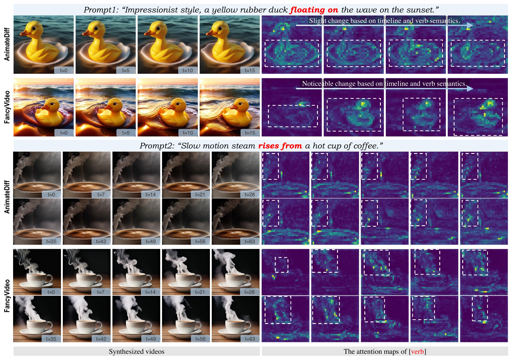
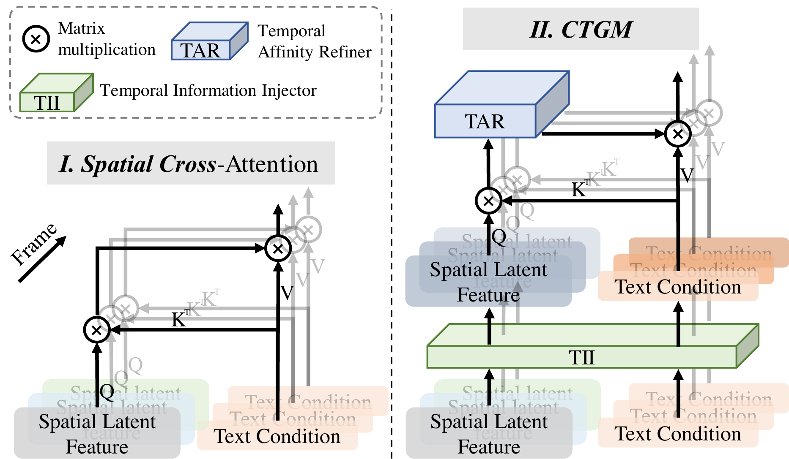
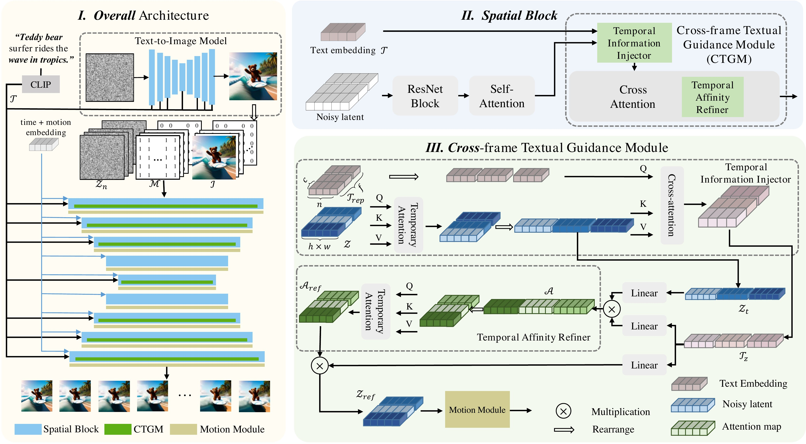
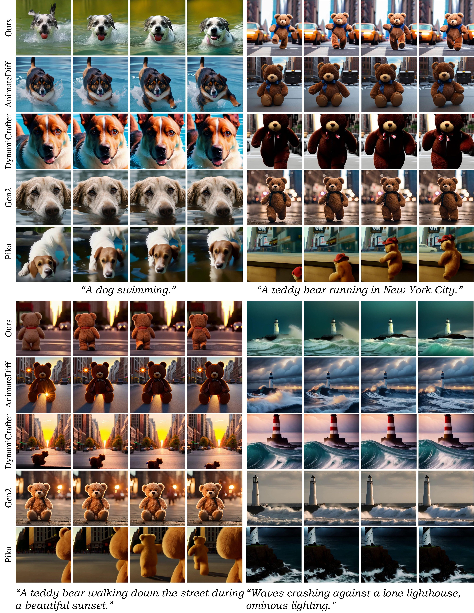
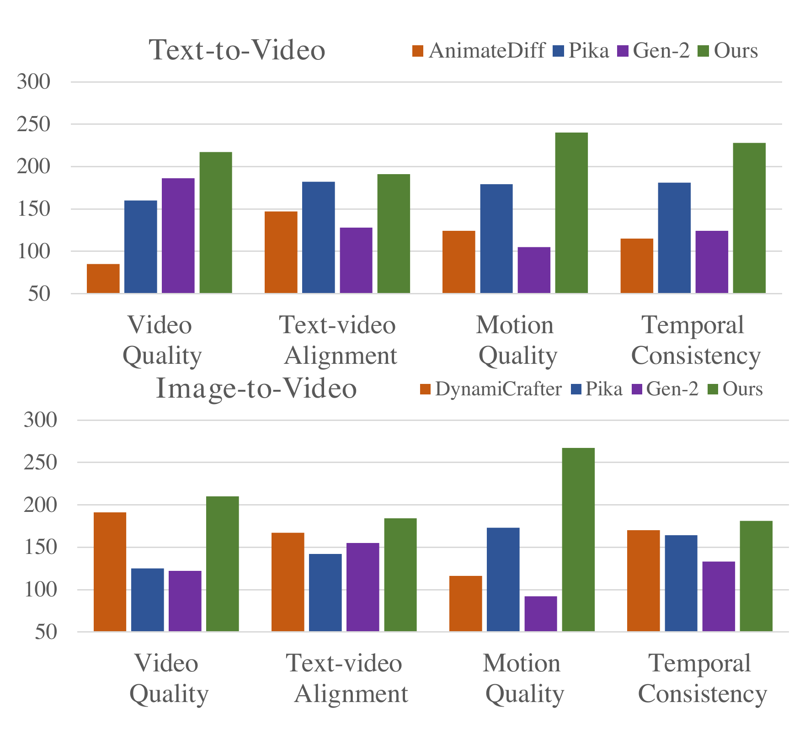

🎮 费曼一分钟
痛点：AnimateDiff 等 T2V 把同一段 text embedding 复制到每一帧做 spatial cross-attention → [verb] 关注区几乎不变 → 动作弱、长视频更明显。
全文最重要创新 = CTGM：在 spatial cross-attention 上同时改造噪声 latent 路与文本 latent 路——TII 让 $\mathcal{T}_{rep}$ 变成逐帧不同的 $\mathcal{T}_z$；TAR 让 text↔patch 亲和矩阵 $\mathcal{A}$ 沿时间连贯；TFB 再强化输出 latent 的时序一致性。三阶段包裹同一次 cross-attn，而非另起炉灶改 temporal block。
T+I2V：输入 = 噪声 latent + mask indicator（首帧=1）+ image indicator（首帧=原图 latent）；伪 3D UNet = 冻结 SD1.5 spatial + CTGM + temporal block。WebVid-10M，只训时序模块。
数：EvalCrafter 综合 Video Quality 177.72、Text-Video 396.65 双第一；Motion 72.99 第二；UCF IS 43.66、MSR CLIPSIM 0.3076 领先。
📄 Figure 1：verb 注意力 vs AnimateDiff

Abstract
T2V models share identical text conditions across frames → lack frame-specific textual guidance, poor motion especially on long clips.
FancyVideo + CTGM (TII + TAR + TFB) builds cross-frame textual conditions before spatial cross-attention.
SOTA on EvalCrafter; competitive UCF-101 / MSR-VTT; supports T+I2V.
现有 T2V 各帧共用文本条件，缺逐帧文本引导，动作差、长视频更严重。
FancyVideo 用 CTGM 在 cross-attention 前构造跨帧文本条件。
EvalCrafter SOTA；UCF/MSR 有竞争力；支持图文生视频。
CTGM：在同一次 spatial cross-attn 内联合改造噪声 latent 路与文本 latent 路（TII→TAR→TFB），使 text 条件跨帧可变、affinity 时序连贯 — 全文最重要贡献，其余（T+I2V、motion score）为配套。
1. Introduction
Spatial cross-attention: same $\mathcal{T}_{rep}$ repeated $f$ times → [verb] region static (Fig.1 vs AnimateDiff).
Problem amplifies at 64 frames. FancyVideo = cross-frame textual guidance pioneer for T2V.
CTGM: TII injects temporal info into text; TAR refines text-latent affinity over time (Fig.2).
空间 cross-attn 各帧重复同一 text → verb 区不动。
64 帧更严重；FancyVideo 首次系统做跨帧文本引导。
TII 注入时序；TAR 精炼亲和矩阵。
论文用 cross-attn map 可视化「动词 token」——工程上可复现（repo 里曾有 visualize 分支）。核心 claim：text 条件应随帧变，而非 latent alone 承担全部动态。
📄 Figure 2：Spatial Cross-Attn vs CTGM — 全文核心创新

双路数据流对照（噪声 latent ↔ 文本 latent）
❌ Baseline Spatial Cross-Attn
噪声路 $\mathcal{Z} \in \mathbb{R}^{f\times h\times w\times c}$：各帧独立 spatial feature，帧间无交互。
文本路 $\mathcal{T}_{rep}$：CLIP 编码一次 → repeat(f) → 每帧 token 向量逐元素相同。
Cross-attn：$Q=W_q\mathcal{Z}$，$K=V=W_{k,v}\mathcal{T}_{rep}$。
→ 帧 $i$ 与帧 $j$ 的 $\mathcal{A}_i,\mathcal{A}_j$ 仅因 $\mathcal{Z}_i\neq\mathcal{Z}_j$ 而不同；text 侧无帧差 → motion 相关 token 权重跨帧趋同 → 动作僵。
✅ CTGM（Cross-frame Textual Guidance）
噪声路：$\mathcal{Z}\xrightarrow{\text{TII·SelfAttn}_t}\mathcal{Z}_t$ — 先在 $(hw)$ 个空间位置上做跨帧 self-attn，让每帧 patch 看见其它帧 → 带时序的 noisy latent。
文本路：$\mathcal{T}_{rep}\xrightarrow{\text{TII·CrossAttn}_s(\mathcal{Z}_t)}\mathcal{T}_z$ — text 作 Q、$\mathcal{Z}_t$ 作 K/V → 每帧 text embedding 不同，且与当前视频状态对齐。
Cross-attn：$Q=W_q\mathcal{Z}_t$，$K=V=W_{k,v}\mathcal{T}_z$；$\mathcal{A}$ 再经 TAR 沿 $f$ 维 refine；输出经 TFB residual 强化。
→ text 与 latent 双向带时序：text 知「当前帧该强调 walk 还是 run」；affinity 知「动词关注区应如何随时间迁移」。
3. Method
Pseudo-3D UNet: frozen SD1.5 spatial blocks + CTGM + temporal attention. Input $\mathcal{Z}=[\mathcal{Z}_n;\mathcal{M};\mathcal{I}] \in \mathbb{R}^{f\times h\times w\times(2c+1)}$.
Motion embedding: RAFT motion score (0.1–10) + timestep; controls amplitude without unrealistic motion when paired with CTGM.
Zero terminal SNR: $\bar{\alpha}_T=0$ to fix train-test SNR gap (v-prediction).
CTGM = paper's central contribution: jointly evolves noisy latent stream $\mathcal{Z}$ and text latent stream $\mathcal{T}$ through one spatial cross-attention, instead of repeating $\mathcal{T}_{rep}$ per frame.
Full CTGM pipeline: $\mathcal{Z}_t,\mathcal{T}_z=\mathrm{TII}(\mathcal{Z},\mathcal{T}_{rep})$ → $\mathcal{A}_{ref}=\mathrm{TAR}(W_q\mathcal{Z}_t\cdot W_k\mathcal{T}_z^\top/\sqrt{d_k})$ → $\mathcal{Z}_{ref}=\mathrm{Softmax}(\mathcal{A}_{ref})W_v\mathcal{T}_z$ → $\mathcal{Z'}_{ref}=\mathrm{TFB}(\mathcal{Z}_{ref})$.
CTGM = 全文核心：在同一次 spatial cross-attn 内同时演化噪声路与文本路，而非各帧重复同一 $\mathcal{T}_{rep}$。
完整链路：TII 双路对齐 → TAR 精炼亲和矩阵 → softmax 聚合 → TFB 强化输出 latent。
① 问题归因准：Fig.1 证明瓶颈在 text 条件跨帧不变，而非 UNet spatial 不够强。② 改动点准：插在已有 T2I cross-attn 上，冻结 spatial、只训 CTGM+temporal，工程可复用 SD 生态。③ 可 ablate：TAR 单独 +9 VQ、+TII 再升、+TFB 满配 — 三阶段各有效。架构上 T+I2V / motion score / zero-SNR 是辅助；CTGM 双路改造才是 motion 质的跃迁。
Stage 0 · Inputs. Noisy $\mathcal{Z}\in\mathbb{R}^{f\times h\times w\times c}$ from $[\mathcal{Z}_n;\mathcal{M};\mathcal{I}]$. Text $\mathcal{T}_{rep}\in\mathbb{R}^{n\times c}$ from CLIP → broadcast to $(f,n,c)$ — identical per frame in baseline.
Stage 1 · TII (pre cross-attn). (i) $\mathcal{Z}_t=\mathrm{SelfAttn}_t(\mathrm{reshape}(\mathcal{Z}))$: each spatial token attends across $f$ frames. (ii) $\mathcal{T}_z=\mathrm{CrossAttn}_s(\mathcal{Z}_t,\mathcal{T}_{rep})$ with text=Q, latent=K/V — text stream absorbs motion state from noisy latent.
Stage 2 · Spatial cross-attn + TAR. Standard cross-attn but on $(\mathcal{Z}_t,\mathcal{T}_z)$: $Q$ from latent, $K/V$ from text. $\mathcal{A}$ then TAR: $\mathcal{A}_{ref}=\mathrm{SelfAttn}_t(\mathcal{A})$ along frame axis per patch-token pair.
Stage 3 · TFB (post cross-attn). $\mathcal{Z'}_{ref}=\mathrm{SelfAttn}_t(\mathcal{Z}_{ref})+\mathcal{Z}_{ref}$: residual temporal boost on denoised latent features before temporal UNet block.
阶段 0：噪声 $\mathcal{Z}$（含 T+I2V 拼接）与 CLIP text；baseline 下 text 各帧完全相同。
阶段 1 · TII：（i）噪声路跨帧 self-attn → $\mathcal{Z}_t$；（ii）text 作查询、$\mathcal{Z}_t$ 作键值 → $\mathcal{T}_z$，文本路从视频状态反推帧级语义重点。
阶段 2 · Cross-attn + TAR：用 $(\mathcal{Z}_t,\mathcal{T}_z)$ 做标准 cross-attn；对亲和矩阵 $\mathcal{A}$ 沿时间维 TAR，使 motion token 关注区连贯迁移。
阶段 3 · TFB：cross-attn 输出再做时序 residual，巩固帧间 latent 一致性。
噪声→文本（TII）：「当前去噪到哪一帧、画面怎么动」写进 $\mathcal{T}_z$。例：prompt "teddy walking … sunset" — 帧 0 强调落脚、帧 8 强调摆臂，同一 verb token 在不同帧的 embedding 被重新加权。
文本→噪声（Cross-attn）：帧特异 $\mathcal{T}_z$ 指导 $\mathcal{Z}_t$ 各 patch 从 text 取语义 → 空间上画对物体、时间上跟对动作。
亲和矩阵（TAR）：约束「哪帧该盯 verb」不跳变。Fig.1 可视化的就是这条链路的末端效果。
输出强化（TFB）：防止 TAR 过度平滑导致糊；residual 保留帧差又拉近连贯性。
详见 Fig.2 双路对照 · 代码 #code text_attn_mode='all'。
Pseudo-3D UNet: frozen SD1.5 spatial + CTGM per cross-attn layer + temporal block. Motion embedding (RAFT 0.1–10). Zero terminal SNR, v-prediction.
每个 spatial block 的 cross-attn 都套 CTGM（非仅顶层）；其后接 temporal attention。运动分数与 zero-SNR 为训练/控制辅助。
AnimateDiff：latent 过 temporal block，text repeat 不变。FancyVideo：CTGM 改 cross-attn 的输入与中间态，temporal block 仍负责 patch 级帧间混合 — 二者正交，但 motion 提升主因是前者（ablation：无 TII/TAR 时加 temporal 仍僵）。
📄 Figure 3：整体 Pipeline

flowchart TB
subgraph noise["噪声路 · noisy latent"]
Zn[Z_n + M + I 拼接] --> Z["Z (f×h×w×c)"]
Z --> TII_t["TII: SelfAttn_t"]
TII_t --> Zt["Z_t 带时序的 noisy feat"]
Zt --> Q["Q = W_q Z_t"]
Zt --> Out["Z_ref → TFB → Z'_ref"]
end
subgraph text["文本路 · text latent"]
CLIP["CLIP encode prompt"] --> Trep["T_rep (f,n,c) 各帧初值相同"]
Trep --> TII_x["TII: CrossAttn_s Q=T K,V=Z_t"]
TII_x --> Tz["T_z 帧特异 text"]
Tz --> KV["K,V = W_k,v T_z"]
end
Q --> A["A = QK^T / sqrt(d)"]
KV --> A
A --> TAR["TAR: SelfAttn_t on A"]
TAR --> SM["Softmax · V"]
KV --> SM
SM --> Out
Out --> TempAttn["Temporal Block"]
💻 代码对照 — CTGM 三件套
官方实现：360CVGroup/FancyVideo · 核心在 fancyvideo/models/ctgm/attention.py（hook cross-attn）与 temporal_cross_module.py（VanillaTemporalModule）。论文 CTGM 拆成 text_attn_mode 控制的三个插入点。
| 论文 | 代码位置 | 触发 mode |
|---|---|---|
| TII · $\mathcal{T}_z$ from $\mathcal{Z}_t$ | Transformer3DModel.forward · ctm_b_self_modules + ctm_b_cross_modules | add_tem_noise_cross_text / all |
| TAR · refine $\mathcal{A}$ | CrossAttention._attention · ctm_i_modules | add_scoremap / all |
| TFB · $\mathcal{Z'}_{ref}$ | CrossAttention._attention · ctm_a_modules | add_hiddenstate / all |
| Zero-init 输出 | VanillaTemporalModule · zero_module(proj_out) | 默认 |
| T+I2V 输入 | UNet channel concat（噪声+mask+image） | 配置侧 |
① TII — 跨帧 text 条件
论文：temporal SA 得 $\mathcal{Z}_t$，再以 text 为 Q、$\mathcal{Z}_t$ 为 KV 得 $\mathcal{T}_z$。代码在 cross-attn block 之前对 latent 做 temporal module，再 cross module 改 encoder_hidden_states；首帧 text 保留原 embedding。
对应式 TII：$\mathcal{Z}_t=\mathrm{SelfAttn_t}(\mathcal{Z})$ 再 $\mathcal{T}_z=\mathrm{CrossAttn_s}(\mathcal{Z}_t,\mathcal{T}_{rep})$。代码用 5D tensor + checkpoint 省显存；首帧 text 回写是 I2V 工程细节，论文未强调。
② TAR — attention map 时序精炼
论文对 $\mathcal{A}$ 做 temporal self-attn。代码在 softmax 前对 attention_scores 做 refine，skip 首帧后拼回（与 verb 可视化一致）。
论文写 replace $\mathcal{A}$；代码是 残差加 refined scores（更稳训练）。TAR 单独 ablation 提升 Motion Quality 最明显（Tab ablation）。
③ TFB — 输出 latent boost
附录 ablation：加 TFB 后 Video Quality 177.72 vs 175.28。代码 ctm_a_modules 在 bmm 之后对 hidden states 做 0.5/0.5 blend。
④ 训练配置（附录 ↔ configs）
- 数据 WebVid-10M；SD1.5 base；只训 temporal + CTGM，spatial 冻结
- 16f：bs 512 × 12k iter → 32/48/64f 递进加长 iter（64 A100）
- 推理 DDIM 50步、CFG 7.5；EvalCrafter 512²；换 Realistic-Vision v5.1（同 AnimateDiff）
flowchart TB WebVid[WebVid-10M] --> Clip[stride-4 crop 256] Clip --> UNet[Frozen SD1.5 spatial] UNet --> CTGM[Train CTGM + Temporal] CTGM --> Loss[v-pred MSE] Loss --> Infer[DDIM 512 + RV5.1]
4. Experiments
| Benchmark | Metric | FancyVideo | Best other |
|---|---|---|---|
| EvalCrafter | Video Quality ↑ | 177.72 | 152.41 DynCrafter |
| EvalCrafter | Text-Video ↑ | 396.65 | 386.18 DynCrafter |
| EvalCrafter | Motion ↑ | 72.99 | 81.56 Show-1* |
| UCF-101 | IS ↑ | 43.66 | 42.70 Emu |
| MSR-VTT | CLIPSIM ↑ | 0.3076 | 0.3072 Show-1 |
*Show-1 Motion 高但 Video Quality 仅 85.08 → 画质差。FancyVideo 画质+动作平衡最佳。
EvalCrafter 四维综合双第一；Motion 第二但 Show-1 画质崩。UCF IS、MSR CLIPSIM 领先。108 prompt × 100 人排序：T2V/I2V 四维均显著优于 AnimateDiff/Pika/Gen2。
消融：TAR 单独 +9 VQ；+TII 再升；+TFB 到满配 177.72 / 396.65 / 72.99。
作者重算 comprehensive（去掉量纲/neutral 子指标）——社区已知原版 aggregate 不合理。对比表用同一套重算公式。
WebVid 水印 → 生成带水印；FVD 对分布敏感；长视频优势在 supplement Fig（64f EC/HE 仍升）。
📄 Figure 4–5：定性 & 人工评测


5. Conclusion
Cross-frame textual guidance via CTGM improves spatial cross-attention; dynamic + consistent videos; SOTA EvalCrafter + strong human eval; effect grows with frame count.
跨帧文本引导优化 cross-attention；更长视频收益更大；EvalCrafter 与人工评测 SOTA。
仍基于 SD1.5 伪 3D 范式，非原生 DiT T2V（对比 Wan/CogVideoX）；WebVid 域偏短 clip；与 WISA 等同机构后续工作可组合。
符号速查表
| 符号 | 含义 |
|---|---|
| CTGM | Cross-frame Textual Guidance Module（TII+TAR+TFB） |
| $\mathcal{T}_{rep}$ | CLIP text embedding，原样 repeat $f$ 帧 |
| $\mathcal{T}_z$ | TII 输出的跨帧、帧特异 text 条件 |
| $\mathcal{Z}_t$ | 带时序信息的 noisy latent（TII 中间量） |
| $\mathcal{M},\mathcal{I}$ | mask / image indicator（T+I2V 首帧锚定） |
| T+I2V | 首帧 T2I 或用户图 + 后续帧视频生成 |
| Motion score | RAFT 估计 0.1–10，控制动作幅度 embedding |
论证结构总览
→ 归因（瓶颈在 text latent 路，非仅 noisy latent 路）
→ 核心创新 CTGM：TII 双路对齐（Z→Z_t，T_rep→T_z）· TAR 改亲和矩阵 · TFB 强化输出
→ 架构 T+I2V 伪 3D UNet + motion embedding + zero terminal SNR
→ 训练 WebVid 只训时序模块
→ 证据 EvalCrafter 双第一 + 人工 + 长视频 ablation
arXiv:2408.08189 · IJCAI 2025 · GitHub
🧩 结构化十问
Q1 · 解决什么问题？
Q2 · 新问题吗？
Q3 · 核心假设？
Q4 · 相关工作？
Q5 · 方案关键？
Q6 · 实验设计？
Q7 · 数据与代码？
Q8 · 结果支持假设？
Q9 · 贡献？
Q10 · 下一步？
🔬 深挖追问
为何改 text 路是「最重要」创新？
Industry 默认范式：T2I UNet + repeat text + temporal block。FancyVideo 用 Fig.1 证明 motion 瓶颈在 cross-attn 的 text 侧。CTGM 不替换 UNet，而在每一次 spatial cross-attn 内并行演化噪声路与文本路：TII 让 text 读 latent 状态；TAR 让读法时序连贯；TFB 让写回 latent 更稳。三件套缺一不可（ablation 逐级 +9 VQ → 满配 177.72）。
TAR 在 softmax 前还是后？
论文公式在 softmax 内用 $\mathcal{A}_{ref}$；代码对 pre-softmax scores 做 temporal refine 再 softmax——更常见且可 residual。读 repo 以对代码为准。
盲区
- WebVid 336×596 → 训练 256²，评测 512²，域 gap
- 水印无法消除
- EvalCrafter comprehensive 自研公式，跨论文比需核对
- 64f 仍短于产品级长视频；supplement 靠递进训练而非单次 128f